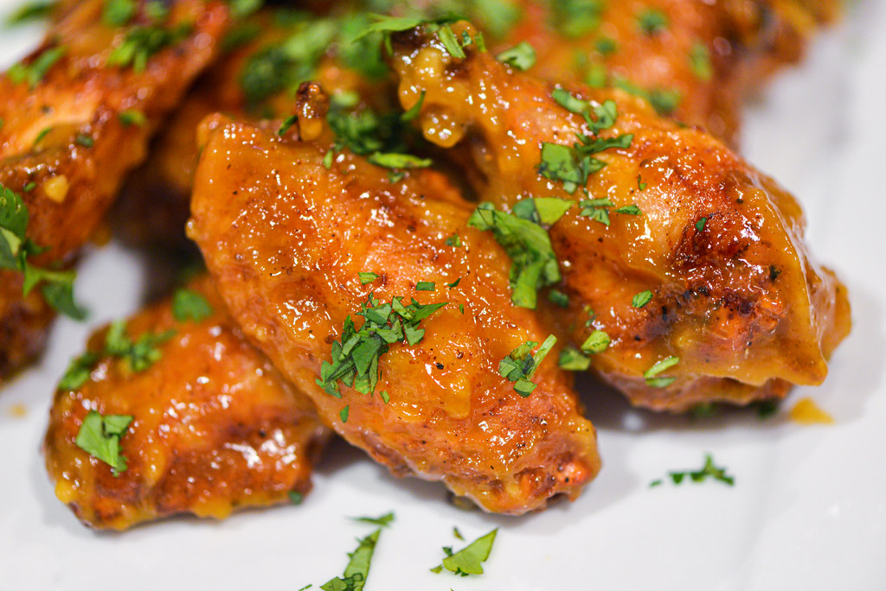

Mango Habanero Chicken Wings

Description
These mouthwatering Mango Habanero Wings are cooked to crispy perfection, then tossed in a delicious sweet and spicy homemade sauce. Whether it’s game day, a gathering with friends, or a weeknight dinner, these chicken wings are bound to be a hit!
Ingredients
- 30 chicken wing sections
- 1 (12 ounce) can mango nectar
- 1/4 cup brown sugar
- 6 habanero peppers, stemmed
- 2 tablespoons soy sauce
- 1 tablespoon Sriracha sauce
- 1 tablespoon rice vinegar
- 1/2 cup butter
- 3 cloves garlic, minced
- 2 tablespoons honey
- 1 cup cornstarch
- 2 cups vegetable oil for frying
Steps
- Rinse chicken wings and pat dry with paper towels. Place onto a baking sheet, cover, and refrigerate until sauce is finished.
- Purée mango nectar, brown sugar, habanero peppers, soy sauce, Sriracha, and vinegar in a food processor (habanero seeds will still be visible). Remove the food processor lid carefully as the pepper fumes can be strong.
- Melt butter in a saucepan over medium heat. Add garlic and cook until fragrant, about 30 seconds. Immediately add mango-habanero mixture and bring to a simmer, stirring frequently. Reduce the heat to medium-low and stir in honey. Simmer, stirring frequently, until sauce is reduced by 75% and thickened to a glaze, 45 minutes to 1 hour.
- While the sauce is cooking, place a rimmed baking sheet in the oven and preheat to 200 degrees F (95 degrees C). Heat oil in a deep-fryer to 350 degrees F (175 degrees C). Place cornstarch in a resealable plastic bag.
- Remove wings from the refrigerator and toss in small batches in cornstarch to lightly coat. Place in a single layer onto a plate.
- Fry 5 to 6 wings at a time in hot oil until golden brown and crispy, about 8 minutes. Drain on paper towels, then place on the baking sheet in the preheated oven to keep warm while you fry remaining batches.
- Remove wings from the oven and place into a large bowl. Pour 1/2 of the hot sauce over top and mix to coat. Continue adding sauce until wings are coated to your liking.